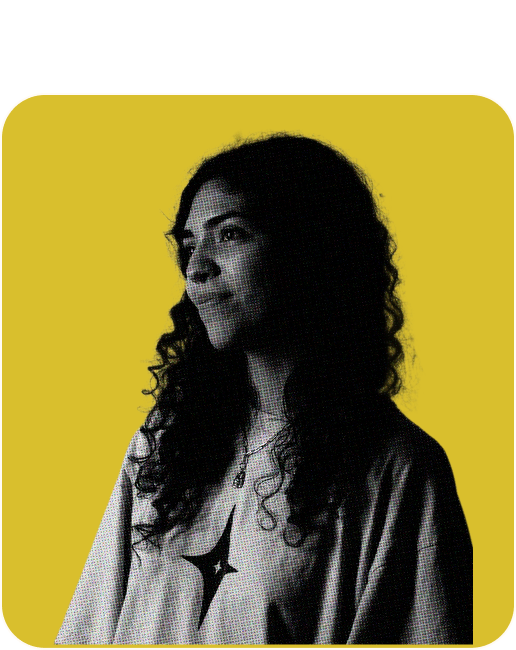
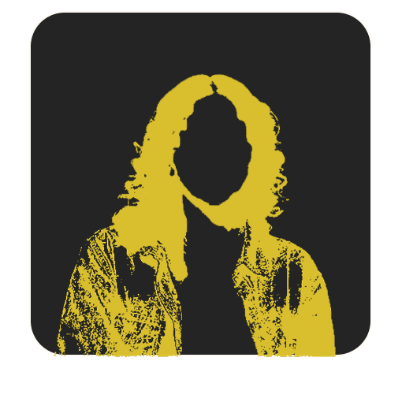
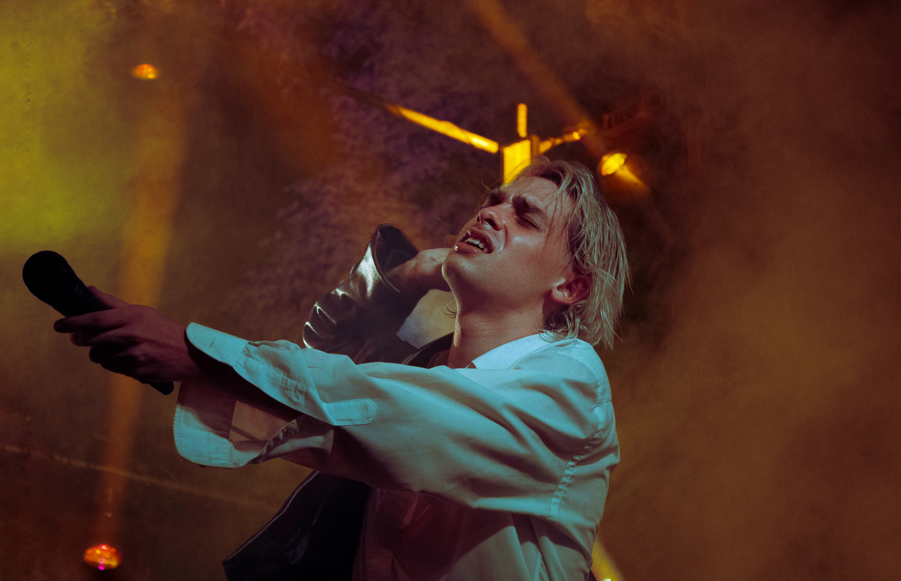
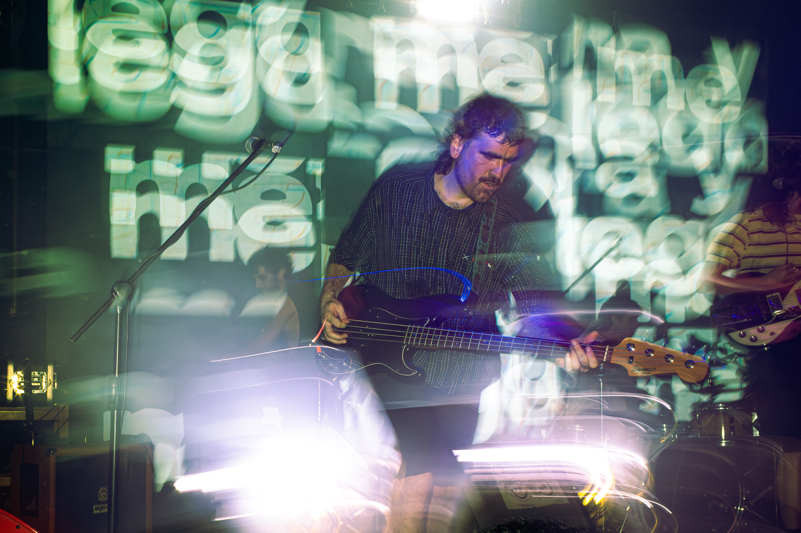
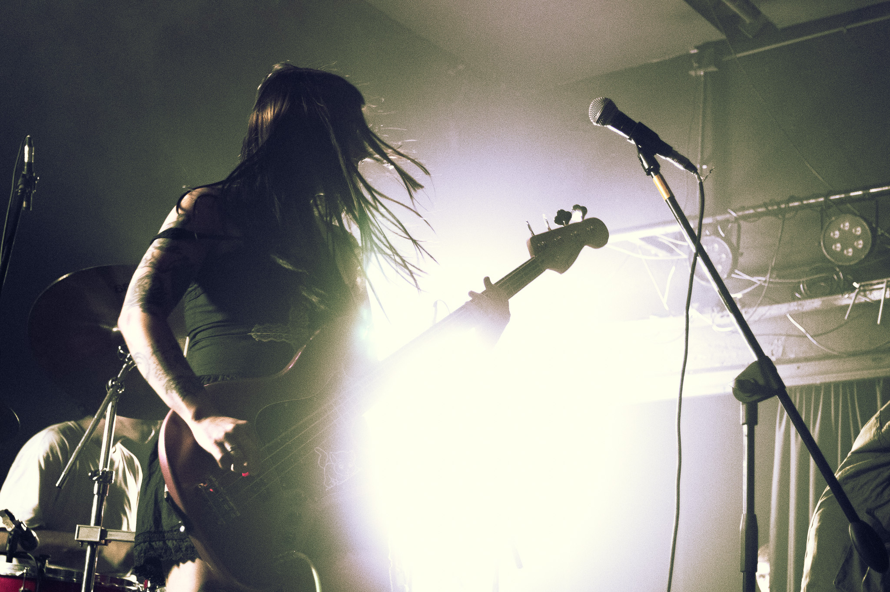
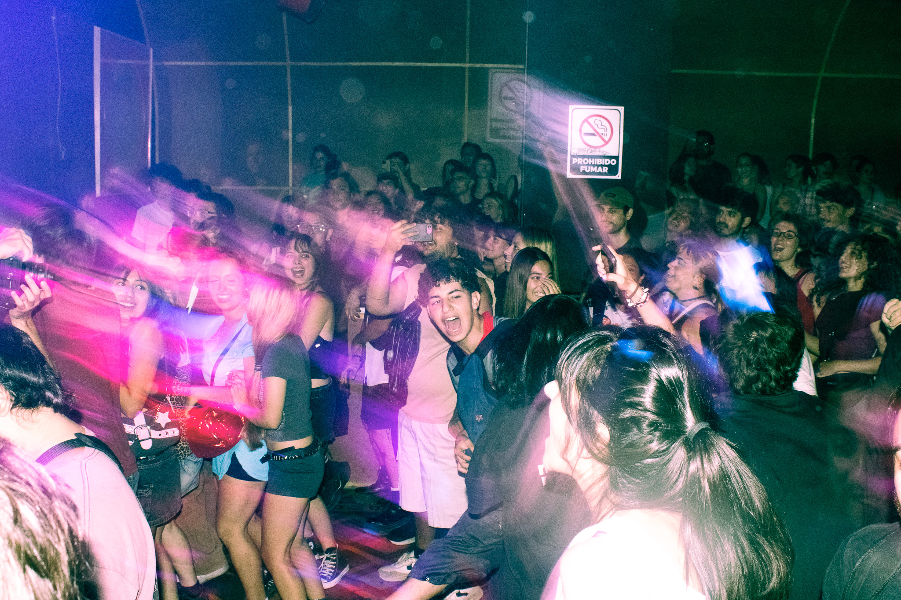

DISEÑO - fOTOGRAFÍA - VIDEO - EDITORIAL - ARTE - UX / UI
MILENA
Hola, soy Milena
Artista interdisciplinaria. Técnica Universitaria en Fotografía y Diseñadora Multimedial.


Sobre mí
Soy Milena Peñaloza y soy de la Ciudad de La Plata. Gran parte de mis proyectos se desarrollan en la escena under platense, donde encuentro mi principal motor creativo.
Me gradué como Técnica Universitaria en Fotografía (UNLP) y soy estudiante avanzada de la Licenciatura en Diseño Multimedial.
Me apasiona la experimentación visual, combinando procesos digitales con técnicas alternativas para crear piezas con identidad propia.
Entiendo el diseño y la imagen como mundos que conviven y se potencian entre sí.
"Fotografía y Video
Realizo coberturas fotográficas en diversas áreas como eventos, moda y gastronomía. Sin embargo, lo que más disfruto es el registro de recitales, donde busco narrar la música en vivo en imágenes.
Además de la captura, trabajo en la edición de video para redes y campañas publicitarias.
Estas son algunas de mis fotos :)




Arte y Diseño
Inicié mi camino en el Diseño Multimedial con un fuerte interés en el diseño UX/UI, lo que me brindó las herramientas para entender la interacción y la funcionalidad. Con el tiempo, mi interés se expandió hacia la vertiente más experimental y artística de la carrera como la creación de instalaciones, visuales y piezas interactivas.
Al mismo tiempo, exploro la fotografía como un sistema visual complejo, desarrollando proyectos editoriales donde conviven la imagen con el diseño y la narrativa visual. Mis proyectos recientes, 'Puertas Adentro' y 'Ruido Blanco', exploran la escena emergente platense desde dos perspectivas distintas: el ensayo y el show en vivo.
Estos trabajos han sido exhibidos en distintos centros culturales, festivales y eventos, formando parte de mi búsqueda por llevar la narrativa editorial al espacio físico.


Experimental
Estoy constantemente experimentando. Mi búsqueda transita la hibridación de lenguajes donde conviven lo analógico y lo digital.
Investigo las posibilidades de los procedimientos alternativos de la imagen, como la cianotipia, y exploro el movimiento de la imagen fija a través del stop motion.
Actualmente, mi foco está en aprender sobre la creación de visuales generativas mediante live coding y las posibilidades de la inteligencia artificial.